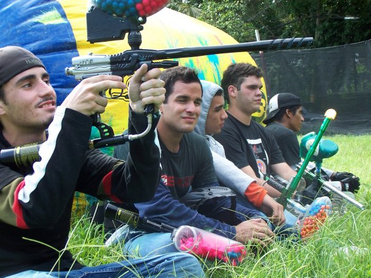
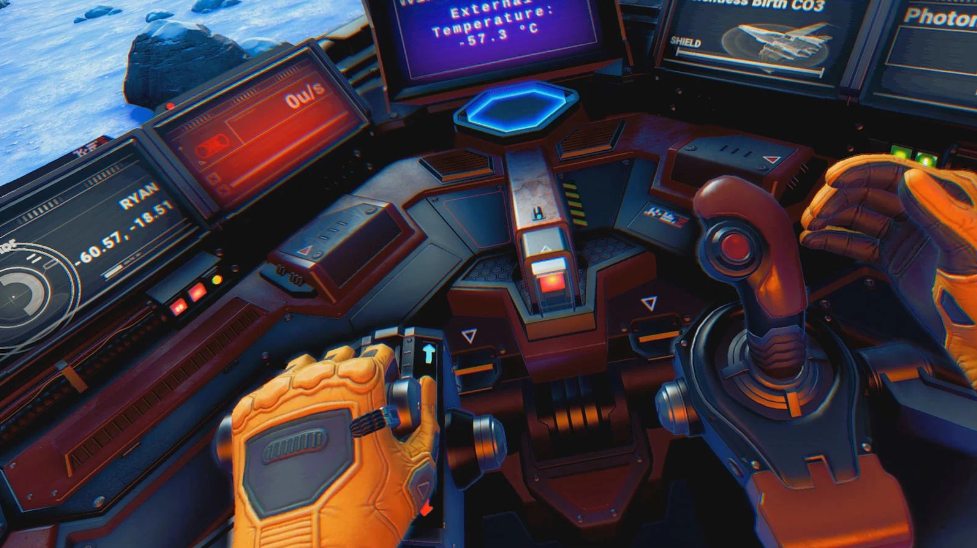
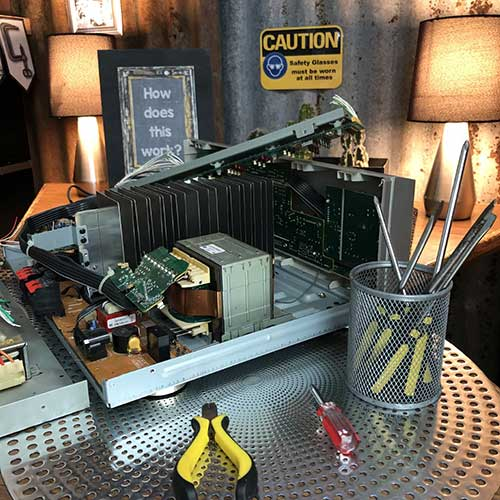
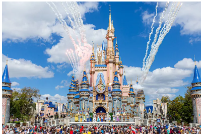
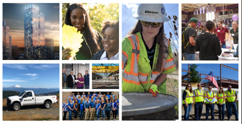

Paintballing is one of my favorite hobbies. It demands high safety awarnes, amazing fisiscal condition, stratigic planning, and high demand of teamwork if the team wants to win.
Hobbie 2

Video games is one of the things that help me disconect and relax. Unless im playng MW2. Games like No Mans Sky and Elden Ring have impresd me a buuunch.
Hobbie 3

Manbual labor and tinkering I think is my top hobbie. When ever I do things like fix or maintain my car, put things together like lego puzzles, and like put an electrical sistem in my paintball helmet that keeps my visor fog free, I live it, and I know becawse tinkering makes time just melt way.
Experience
Experience 1

I have worked at the hospitality industry for 8yrs and have lerned amazing things and have met amazing teams.
I gues this is one of the jobes that you dont feel like you are working when you are performing it.
Experience 2
I have been an auto technician for at least 11yrs.
When I do it for charity it feels wholesome. I like to fix things and love it when I can see them running smoothly.
I have worked for numerous companies like Bella international and Jaguar of PR.
It has been an experience that has given me amazing skills.
Experience 3

I have worked in construction and a job as a Engineering tech. This was with the company of Terracon.
In This company I learned that I can find a company that is complete in the aspects of almost everything,
yes, everything, from training to amazing communication between managers and employees.
It is a time demanding job but a very good job.